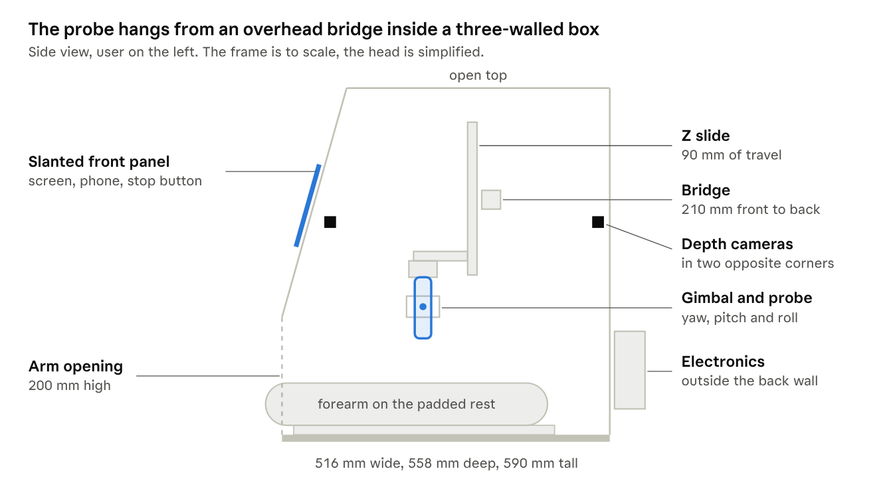

Hardware Brief
The design as it stands in CAD version 6, why it is built this way, and how the two probe versions differ.
UltraVena is a tabletop enclosure that scans a forearm with a motorised ultrasound probe and stamps an ink dot where a dialysis needle should go. This brief describes the hardware as it stands in CAD model version 6, why it is built this way, and how the Butterfly iQ3 and GE Vscan Extend versions differ.
The machine in one view

The user sits at the open front and slides a forearm under the slanted panel onto a padded rest. Overhead, a bridge rides front to back on two side rails, a carriage runs across it, and a vertical slide hangs from the carriage, which together give the probe its three straight-line motions. At the bottom of that slide a three-servo gimbal tilts and spins the probe. Two depth cameras watch the arm from opposite corners, and every board and power part hangs on the outside of the back wall so that nothing inside is in the way of the gantry.
Size and reach
The enclosure is 516 mm wide, 558 mm deep and 590 mm tall, small enough for a clinic table. The six axes and their travel, as checked in a 579-pose sweep of the CAD model with no collisions, are below.
| Axis | What moves | Driven by | Travel |
|---|---|---|---|
| Y, along the arm | The whole bridge | Two stepper motors, one belt per side | 210 mm |
| X, across the arm | The carriage on the bridge | One stepper motor and a belt | 160 mm (80 mm each side of centre) |
| Z, up and down | The slide on the carriage | One stepper motor and a lead screw | 90 mm |
| Yaw, spin about the probe's own axis | The yoke | Servo 1 | 90° each way |
| Pitch, tilt along the arm | The ring inside the yoke | Servo 2 | 30° each way |
| Roll, tilt across the arm | The probe holder inside the ring | Servo 3 | 20° each way |
The three tilt axes all pass through one point 55 mm above the probe face. Because of that, tilting the probe to sit square on a curved arm barely moves the face sideways, and what little it does move is corrected by X and Y.
The gantry
The gantry is a 3D printer rebuilt as a bridge. A Creality Ender-3 V3 SE is taken apart for its motors, belts, pulleys, lead screw, controller board and 24 V supply, and those parts are remounted on a frame of 20 mm aluminium extrusion.
-
Y axis. Two side rails run front to back, 185 mm either side of centre and 400 mm above the base. The bridge spans them and is pulled by a belt on each side, each with its own motor, so the bridge cannot skew. The donor printer only supplies three usable motors (its fourth is a short geared extruder motor), so one matching motor is bought separately.
-
X axis. A carriage rolls along the bridge on wheels, pulled by a single belt.
-
Z axis. A linear rail (MGN12 with two long carriages) is bolted upright to the carriage, and a lead screw from the Z motor raises and lowers a slide plate on it. The rail matters because the probe hangs 116 mm in front of the slide, and that overhang would twist a simpler sliding block.
-
Homing. Each axis has a roller-lever switch that gives it a known zero at power-on.
-
Cabling. The moving wires travel in a cable chain from the back wall to the bridge, then arch across to the carriage and down the slide.
The probe head
The head is everything that hangs from the Z slide. From top to bottom it is built in this order, and each layer exists for one reason.
-
Reach bracket. Carries the head 116 mm forward of the Z rail, so the yoke can spin a full 90° each way without hitting the rail or the carriage.
-
Floating mount. Two 6 mm guide rods with bushings and stop collars. The head hangs on these under its own weight and can lift freely by 15 mm, so the hardest it can ever press on an arm is that weight (about 7 N by estimate). A switch trips as soon as it starts to lift.
-
Load cell. A 5 kg bar that carries everything below it and measures the contact force, with its amplifier mounted right beside it on the slide plate so the weak signal travels only a few centimetres.
-
Yaw servo and yoke. The first servo points straight down and spins a printed U-shaped yoke.
-
Pitch servo and ring. The second servo sits on one arm of the yoke and tilts a printed ring held between the yoke's arms.
-
Roll servo and probe holder. The third servo sits on the back of the ring and tilts the holder that clamps the probe.
-
On the holder. A tilt sensor that reads true pitch and roll from gravity, and the marker actuator clamped to one side.
All three servos are Waveshare ST3215 units, which report their true angle back over a shared cable. The printed parts (yaw mount, yoke, ring, holder, cradles) are specific to the probe, so each version has its own set.
The marker. A small linear actuator (Actuonix L12, 30 mm stroke) holds an ink tip 24 mm above the probe face so that it never touches the skin during a scan. To mark, the probe lifts, the gantry shifts sideways by the fixed distance between the probe centre and the tip, and the actuator pushes the tip down onto the skin. Nothing pierces the skin.
The enclosure
The frame is 20 mm aluminium extrusion on a 12 mm base plate, with 3 mm panels on the back and both sides. The top is left open so the gantry is easy to see and reach during development.
-
Arm opening. The front is open to a height of 200 mm across the full width, which is where the forearm goes in.
-
Slanted front panel. Above the opening, a steep panel runs from the front edge up and back to the top rail 110 mm further in. It carries the 7 inch touchscreen, the emergency stop on the right, and on the Butterfly version the phone. The steep slope keeps it out of the gantry's way while still facing the user.
-
Arm rest. A padded rest on the base with six thin pressure pads under the padding and a socket for the wrist band sensor.
-
Lighting. White LED strips under the top rails, on the back, both sides and the front, so the depth cameras always see an evenly lit arm.
-
Electronics bay. On the outside of the back wall, from top to bottom, sit the 24 V supply and mains inlet, the fuse block and four converters, the USB hub, Teensy and servo adapter, and a shelf with the Jetson and the motion controller. Cables pass through a single grommeted opening in the back wall.
-
Cable holes. One in the back wall for everything electrical, and one more for the probe cable, whose position depends on the version.
Sensing
The machine has to answer three questions the whole time it runs, and each has more than one sensor behind it.
| Question | Sensor | Where it sits | What it contributes |
|---|---|---|---|
| Where is the arm and what shape is it? | Two RealSense D405 depth cameras | Front left and back right corners, looking down | A 3D surface of the forearm, which tells the probe what angle to hold at every point |
| Four printed markers | Stuck on the skin | Fixed reference points the cameras can find exactly, so a tap on the screen maps to a real spot on the arm | |
| Has the arm moved? | Wrist band motion sensor (BNO085) | Strapped to the wrist | Catches a twitch within milliseconds |
| Six pressure pads | Under the arm rest padding | Feel the arm lift, roll or slide | |
| The depth cameras again | See the markers drift, more slowly but with no contact needed | ||
| How is the probe sitting on the skin? | Load cell | In the head, above the gimbal | Contact force, so Z stops at a light touch |
| Lift switch | On the floating mount | Trips if the head is pushed up at all | |
| Tilt sensor (BNO085) | On the probe holder | True pitch and roll from gravity, as a check on the servos | |
| The servos' own angle sensors | Inside each servo | Confirm each tilt move actually finished |
Two cameras are used because the probe head will always block one view of the arm from somewhere, and opposite corners guarantee the other camera can still see.
Design choices
Each row is a decision that could have gone another way, with what it replaced and the reason it went this way.
| Decision | Instead of | Why |
|---|---|---|
| Ink marker stamp | A needle insertion mechanism | Proves the system can find and hit the right point without piercing skin, which keeps the prototype safe to demonstrate. |
| Gantry from a donor 3D printer | Buying motors, rails, controller and supply separately, or a used laser engraver frame | One $179 purchase supplies most of the motion parts and a 350 W supply already matched to them. |
| Two motors on Y | One motor and one belt | A bridge driven from one side skews under load. |
| Linear rail on Z | A printed block sliding on extrusion | The head overhangs by 116 mm, and the rail resists the twist that overhang creates. |
| 116 mm reach bracket | The original 70 mm | The motion sweep showed the yoke hitting the Z rail before yaw reached 90°. |
| Floating head | Relying on the load cell and software to limit force | A purely mechanical limit still works if the software or a sensor fails. |
| Linear actuator for the marker | A solenoid | The solenoid's 10 mm throw was short of the 14 mm needed, and an actuator can press gently and hold. |
| Feedback bus servos (ST3215) | Hobby servos (SF3218MG) | They report their true angle, need one chained cable, and cost only about $3 more each. Gear slack is still unmeasured for both. |
| Servos on their own 12 V converter | Sharing the Jetson's 12 V | Three stalled servos can draw 8.1 A, nearly double that converter's rating, and the emergency stop must be able to cut them without cutting the computer. |
| Load cell amplifier on the head | On the back wall with the other boards | The load cell's signal is tiny and would pick up noise over a metre of moving cable. |
| Two depth cameras in opposite corners | One camera in a corner, or one overhead | The probe head cannot block both at once. |
| Three walls and a slanted front | An open frame | Keeps hands and stray light out, gives the screen and phone a place facing the user, and gives the electronics an outside wall to live on. |
| Electronics outside the back wall | Mounted on the gantry or inside | Nothing inside competes with the gantry for space, and the boards stay reachable. |
| Jetson plus a separate Teensy | The Jetson reading every sensor itself | The safety checks keep running a thousand times a second even when the Jetson is busy with images. |
| Emergency stop cuts motion power only | Cutting everything | The screen can still tell the user what happened, and the system does not need to reboot. |
| Tilt pivot 55 mm above the probe face | Pivoting at the servo shafts wherever they fall | Tilting barely shifts the probe face, so less gantry correction is needed. |
Butterfly and Vscan versions
The two versions share the frame, gantry, floating mount, servos, sensors, computer, power system and software structure. They differ only where the probe itself forces a difference.
| Butterfly iQ3 version | GE Vscan Extend version | |
|---|---|---|
| Probe body | 152 × 52 × 37 mm, one imaging face | 129 × 39 × 28 mm, dual probe with a transducer at each end |
| Printed gimbal parts | Sized for the wider, longer body | A smaller set, so the two are not interchangeable |
| Where the image appears | The Butterfly app on a phone | The Vscan's own display unit |
| Where that display lives | Phone on a magnetic mount on the right of the slanted panel, facing the user | Display unit inside a light-tight box on the outside of the back wall |
| How the Jetson gets the image | Butterfly's SDK, which the company confirmed streams imaging in real time to other devices | A small camera (Arducam IMX219) inside the light box, filming the display |
| Doppler and biplane imaging | Available on the probe, and usable if the SDK stream carries them | Reaches the Jetson only as whatever the filmed screen shows, not as data |
| Probe cable route | Forward through a hole in the slanted panel to the phone | Back through a hole in the back wall to the display unit |
| Touchscreen position | Shifted 80 mm left to make room for the phone | Centred on the panel |
| Extra power | 5 V to the phone's charging pad | None |
| Extra data cable | None | Camera ribbon cable to the Jetson |
| Marker offset from probe centre | 48.5 mm | 44 mm |
| Extra cost in the parts list | About $39 (phone mount) | About $30 (camera and box) |
The Butterfly version is the stronger of the two on image quality into the software, since a direct stream beats a camera pointed at a screen, and it is the only one where flow and two-plane data can reach the vessel model. The Vscan version is mechanically lighter and needs no phone.
How the design got here
| Revision | What changed |
|---|---|
| CAD version 6 | Hobby servos replaced by ST3215 bus servos. Servo driver board replaced by a bus adapter. Separate 12 V converter for the servos and a small 6 V one for the marker. |
| CAD version 5 | Floating head added as a mechanical force limit. Z slide moved onto a linear rail. |
| CAD version 4 | Second design audit. Dedicated second Y motor added, load cell amplifier moved onto the head, limit switches added. |
| CAD version 3 | First motion sweep. Reach bracket lengthened from 70 to 116 mm so yaw clears the Z rail. Marker solenoid replaced by a linear actuator. |
| CAD version 2 | First fully detailed model with every part, fastener and wire, checked for collisions. |
| Viewer version 7 | Enclosure refactor. Three walls, slanted front panel, electronics moved outside, lighting and wiring mapped. |
| Earlier viewer versions | Open gantry concept. Needle insertion replaced by an ink marker. One corner camera became two. Touchscreen added. |
The browser 3D viewer still shows the version 7 layout and has not been updated to match CAD version 6.
Known limits and open questions
-
Nothing has been built yet. Every dimension comes from the CAD model and supplier pages, and the probe bodies are modelled from published outer dimensions, not measured from the real probes.
-
Servo slack is unmeasured. No supplier publishes it. One degree of play moves the probe face about 1 mm, so the first servo to arrive should be tested before the other two are ordered.
-
Head weight sets the force limit. The 7 N figure is an estimate and needs confirming by weighing the finished head.
-
Depth cameras on bare skin. The D405 relies on visible texture, which smooth skin lacks, so one should be tested on a forearm before buying two.
-
Ultrasound gel. The probe needs gel, and loose gel smears the ink mark. A solid gel pad over the probe face is the likely answer and is not yet in the design.
-
Scanning is stop-and-go. The probe moves, settles, corrects its tilt and then images. It does not glide continuously, which keeps the six axes in step at the cost of speed.
-
Reach. 210 mm of travel along the arm covers a typical fistula site but not a whole forearm in one pass, so the arm has to be placed with the site inside that window.
-
The Teensy cannot yet stop the motors by itself. A stop wire from the Teensy to the motion controller is recommended and not yet in the CAD.
-
Open top. Fine for development, but a finished unit would want a lid to keep hands and light out.
Part numbers and prices are in the parts list, part-by-part research notes are in the parts research brief, and the cable-by-cable map is in the wiring and software debrief.